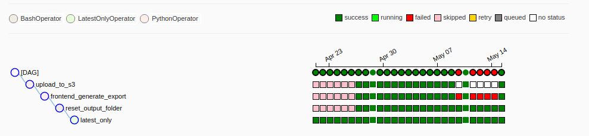
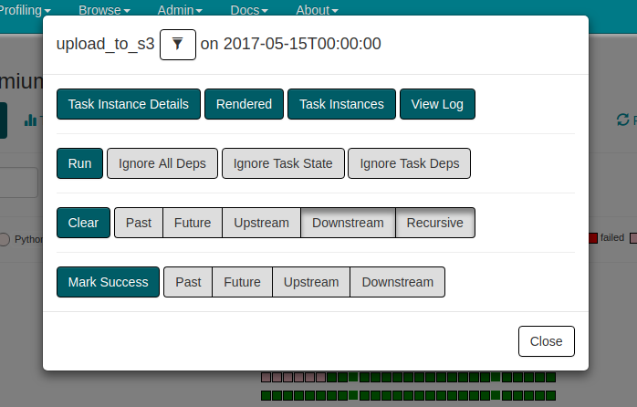
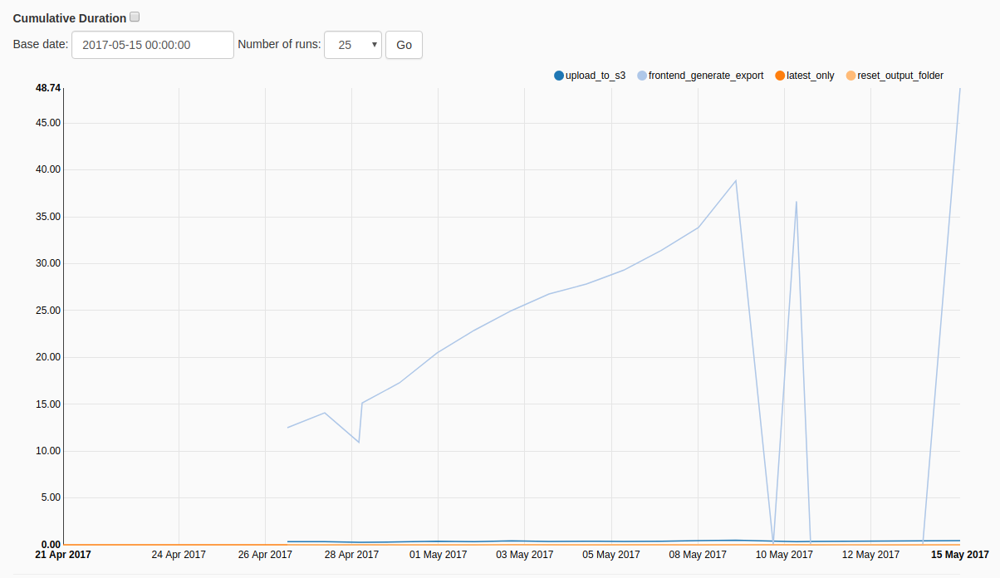

Background
Apache Airflow is a tool to work with complex and recurring workflows. Workflows is a more formal term to describe scripts like cronjobs. Scripts constitute of a series of tasks, sometimes with retry mechanism attached to it.
A tool like this is used in data-intensive environments with background jobs that need to run everyday. These background scripts do extraction, enrichment and other transformations to a dataset. Most workflow software gives you a structure to use when writing your scripts, so they are able to distinguish between steps and manage their interdependencies. It is a very handy feature because it allows Airflow to run only the steps that are needed.
It is a powerful concept those of tasks dependencies: if you have a workflow that starts with a common task and then branches out in two parallel sequence of tasks, a failure in one of the branches can be recovered without running the initial tasks. Generally, if a task depends on another task that has already been run successfully, it will not be re-run again. It is literally a time-saver.
In data processing there are two kinds of architecture: batch processing and streaming. Generally it is easier to reason in terms of batch processing, and advisable to do so, unless there are near real-time requirements. In batch processing, workflow tasks are started and terminated when they are needed rather than daemonized and kept in the background. The processing happens in “batches” of data, rather than streamed in through a message queue.
Apache Airflow comes from the experience of Maxime Beauchemin that worked both at Facebook and Airbnb. When you use it, you realize it covers a lot of use cases and many levels of sophistication. It is the only open source workflow management tool as far as i know that covers both scheduling and workflow management.
The core concepts are quite simple: workflows are called DAGs, workflow steps are called tasks. Tasks are instances of Operators. There are many types of Operators in Airflow, PythonOperator runs Python code, BashOperator runs shell commands… you get the idea.
What you get
Airflow offers a web UI and most operations are done from there. One of the most helpful web views is the tree view, although slightly harder to read than the graph view. It is a matrix where rows represent tasks and columns represent the time intervals. If your workflow is made up of 3 tasks and runs daily, columns will be days and the 3 rows will be the 3 tasks. Each cell will then represent the task run status.
In the example below, upload_to_s3 is a step that depends on frontend_generate_report step, which in turns depend on reset_output_folder, which in turn depends on latest_only. That is how it is read.

For each task run there are a bunch of useful operations that can be done through the UI. View its logging (Airflow creates a log file per task run), and clear/mark done its status. I found these last options very useful when fixing bugs: if you clear a task run, it will be rescheduled and rerun by the system. Marking it done will allow Airflow to schedule the next dependent task, it is useful when you want to skip some steps.

Another view that is interesting to look at is task duration. It’s about how long each tasks take from start to end. Useful if you want to make sure they run within a certain amount of time.

I will write an article with a more in-depth view of the tool sometimes soon. Stay tuned!